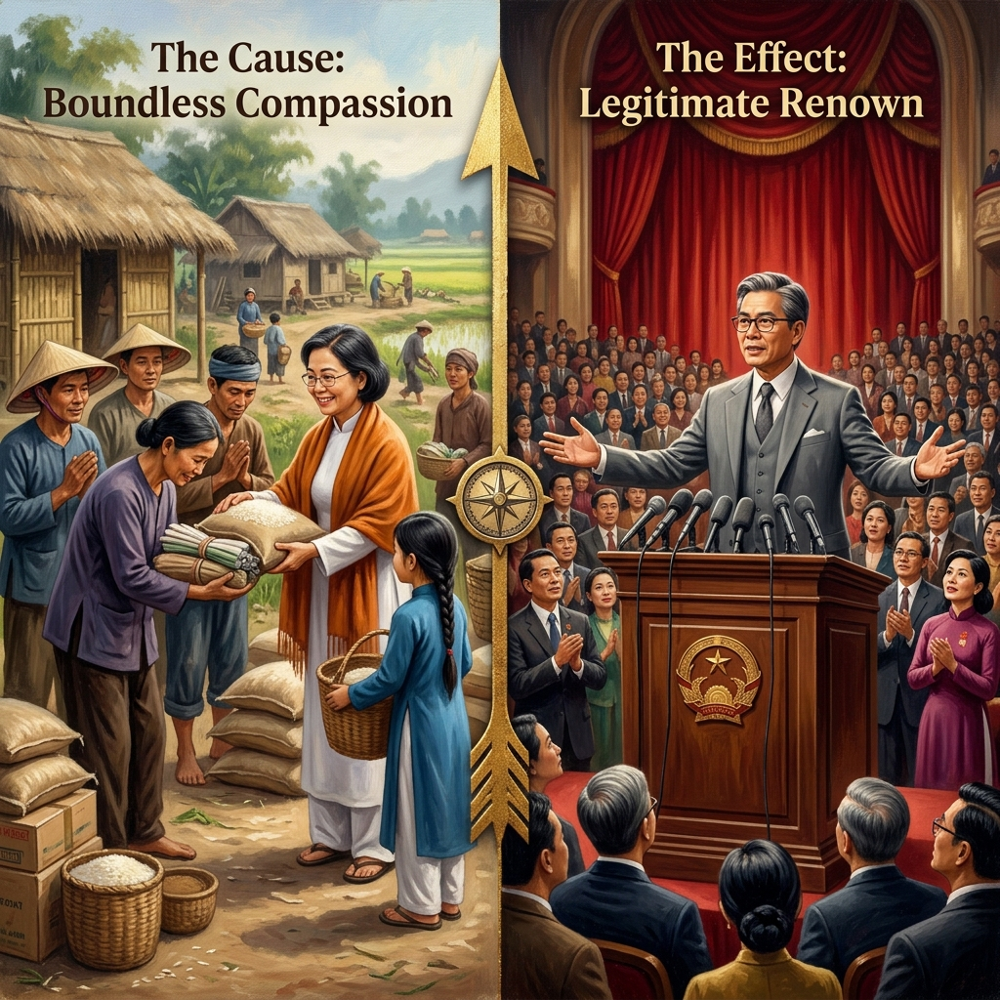

La Fama que Nadie BuscóThe Fame No One SoughtLa Fama che Nessuno Cercò无人追逐的声名الشهرة التي لم يسعَ إليها أحدСлава, которой никто не искалDer Ruhm, den niemand suchteLa Gloire que Personne ne Chercha誰も求めなかった名声A Fama que Ninguém ProcurouDanh Tiếng Không Ai Tìm Kiếm
La verdadera fama no se conquista en escenarios ni se compra con monedas: se cosecha en las aldeas donde nadie te ve, en los gestos que nadie fotografía, en el arroz que entregas con las dos manos a quien tiene hambre y con la mirada que le dice: «No me debes nada.» True fame is not won on stages or bought with coins: it is harvested in villages where no one sees you, in gestures no one photographs, in the rice you hand with both hands to the hungry with a gaze that says: "You owe me nothing." La vera fama non si conquista sui palcoscenici né si compra con le monete: si raccoglie nei villaggi dove nessuno ti vede, nei gesti che nessuno fotografa, nel riso che consegni con entrambe le mani a chi ha fame e con lo sguardo che dice: «Non mi devi nulla.» 真正的声名不是在舞台上赢得的，也不是用金钱买来的：它在无人注视你的村庄里收获，在无人拍摄的举动中，在你用双手递给饥饿者的米饭中，用目光告诉他："你什么都不欠我的。" الشهرة الحقيقية لا تُكتسب على المنابر ولا تُشترى بالمال: تُحصد في القرى حيث لا يراك أحد، وفي لفتات لا يصوّرها أحد، وفي الأرز الذي تمدّه بكلتا يديك لجائع وعيناك تقولان: "لا تدين لي بشيء." Истинная слава не завоёвывается на сценах и не покупается монетами: она пожинается в деревнях, где никто тебя не видит, в жестах, которые никто не фотографирует, в рисе, который ты протягиваешь обеими руками голодному со взглядом: «Ты мне ничего не должен.» Wahrer Ruhm wird nicht auf Bühnen errungen noch mit Münzen erkauft: Er wird in Dörfern geerntet, wo niemand dich sieht, in Gesten, die niemand fotografiert, im Reis, den du mit beiden Händen dem Hungrigen reichst und mit einem Blick sagst: „Du schuldest mir nichts." La vraie gloire ne se conquiert pas sur les scènes ni ne s'achète avec des pièces : elle se récolte dans les villages où personne ne te voit, dans les gestes que personne ne photographie, dans le riz que tu tends de tes deux mains à l'affamé avec un regard qui dit : « Tu ne me dois rien. » 真の名声は舞台で勝ち取るものでも、金で買うものでもありません。誰も見ていない村で、誰も写真に撮らない仕草で、両手で飢えた人に米を差し出し、「何も借りはない」と目で伝えるところで収穫されるのです。 A verdadeira fama não se conquista em palcos nem se compra com moedas: colhe-se nas aldeias onde ninguém te vê, nos gestos que ninguém fotografa, no arroz que entregas com as duas mãos a quem tem fome e com o olhar que diz: «Não me deves nada.» Danh tiếng thực sự không chinh phục trên sân khấu hay mua bằng tiền bạc: nó được gặt hái ở những ngôi làng không ai nhìn thấy bạn, trong những cử chỉ không ai chụp ảnh, trong hạt gạo bạn đưa bằng cả hai tay cho người đói với ánh mắt nói rằng: "Bạn không nợ tôi gì cả."
Existe una diferencia abismal entre el que da para que lo vean y el que da con compasión infinita. El primero compra aplausos temporales: obtiene un nombre grabado en una placa que el viento irá borrando syllable tras syllable. El segundo planta algo mucho más profundo en el campo invisible del karma: planta gratitud silenciosa, que es la semilla más poderosa del universo. Cuando una persona entrega arroz, mantas, medicinas o simplemente su tiempo a quienes sufren — no como inversión, no como espectáculo, sino porque su corazón se rompe al ver el hambre ajena y necesita repararse dando —, el karma registra ese acto con la tinta más indeleble de su libro. Y la retribución es exacta: a quien dio sin buscar reconocimiento, el universo le otorga el reconocimiento más hondo y duradero de todos.
Esta es la paradoja más bella de la ley kármica: la fama verdadera llega precisamente a quien nunca la buscó. No es la fama ruidosa de los que gritan para ser escuchados: es la fama silenciosa del que habla tan bajo que todo el mundo se inclina a escucharlo. Es el nombre que pronuncian los ancianos del pueblo cuando quieren enseñar a los niños qué significa ser bueno. Es la voz que se recuerda en los discursos, no porque tuviera micrófonos sino porque tenía verdad. El karma transforma la mano que dio arroz en las aldeas de paja en la mano que un día se alzará ante multitudes desde un podio, no porque la ambición la haya llevado allí, sino porque el amor que sembró en silencio creció hasta hacerse imposible de ignorar.
There is an abysmal difference between giving to be seen and giving with boundless compassion. The first buys temporary applause: a name carved on a plaque the wind will erase syllable by syllable. The second plants something far deeper in karma's invisible field: silent gratitude, the most powerful seed in the universe. When a person delivers rice, blankets, medicine, or simply their time to those who suffer—not as investment, not as spectacle, but because their heart breaks at the sight of another's hunger and needs to mend itself by giving—karma records that act with the most indelible ink in its book. And the retribution is exact: to the one who gave without seeking recognition, the universe grants the deepest and most lasting recognition of all.
This is the most beautiful paradox of karmic law: true fame arrives precisely to the one who never sought it. It is not the noisy fame of those who shout to be heard: it is the silent fame of one who speaks so softly that the entire world leans in to listen. It is the name elders speak when teaching children what goodness means. It is the voice remembered in speeches, not for having microphones, but for having truth. Karma transforms the hand that gave rice in thatched villages into the hand that one day will rise before multitudes at a podium—not because ambition brought it there, but because the love sown in silence grew until it was impossible to ignore.
Esiste una differenza abissale fra chi dona per farsi vedere e chi dona con compassione infinita. Il primo compra applausi temporanei. Il secondo pianta nel campo invisibile del karma la gratitudine silenziosa, il seme più potente dell'universo. Quando una persona consegna riso, coperte o il proprio tempo a chi soffre — non come investimento ma perché il suo cuore si spezza vedendo la fame altrui — il karma registra quell'atto con l'inchiostro più indelebile.
Questo è il paradosso più bello della legge karmica: la fama vera arriva proprio a chi non l'ha mai cercata. Non è la fama rumorosa di chi grida per essere ascoltato: è la fama silenziosa di chi parla così piano che il mondo intero si china ad ascoltarlo. Il karma trasforma la mano che diede riso nei villaggi di paglia nella mano che un giorno si alzerà davanti alle folle da un podio — non perché l'ambizione l'abbia portata lì, ma perché l'amore seminato in silenzio è cresciuto fino a non poter essere ignorato.
为了被看见而给予和出于无限慈悲而给予之间存在天壤之别。前者购买的是暂时的掌声。后者在业力那看不见的田地里种植了沉默的感恩——宇宙中最强大的种子。当一个人向受苦的人送去米、毯子、药品或仅仅是时间——不是作为投资，不是作为表演，而是因为她的心因看到他人的饥饿而碎裂——业力用其账簿中最不可磨灭的墨水记录下那一幕。
这是业力法则最美的悖论：真正的声名恰恰降临在从不追求它的人身上。它不是呐喊者的喧嚣之名：而是低声细语者的无声之名，低到全世界都俯身倾听。业力将在茅草村庄施予米饭的手，化为终有一天在讲台上面对万众高举的手——不是因为野心将它带到那里，而是因为在沉默中播下的爱长大到无法忽视。
ثمة هوّة سحيقة بين من يعطي ليُرى ومن يعطي بعطف لا حدود له. الأول يشتري تصفيقاً مؤقتاً. الثاني يزرع في حقل الكارما الخفي الامتنان الصامت — أقوى بذرة في الكون. حين يقدّم إنسان أرزاً وأدوية ووقته لمن يعاني — لا استثماراً بل لأن قلبه ينكسر لرؤية جوع الآخرين — يسجل الكارما ذلك بأكثر الأحبار ثباتاً.
هذا أجمل تناقض في قانون الكارما: الشهرة الحقيقية تأتي تحديداً لمن لم يسعَ إليها. ليست شهرة الصارخين ليُسمعوا بل شهرة من يتكلم بهمس فيميل العالم كله ليسمعه. يحوّل الكارما اليد التي قدّمت الأرز في أكواخ القش إلى اليد التي سترتفع يوماً أمام الجماهير من فوق منبر — لا لأن الطموح قادها بل لأن الحب المزروع بصمت نما حتى استحال تجاهله.
Между тем, кто даёт, чтобы быть замеченным, и тем, кто даёт с безграничным состраданием, — пропасть. Первый покупает мимолётные аплодисменты. Второй закладывает в невидимое поле кармы молчаливую благодарность — самое могущественное семя во вселенной. Когда человек несёт рис, одеяла, лекарства или просто своё время страждущим — не как инвестицию, а потому, что его сердце разрывается при виде чужого голода, — карма фиксирует это самыми стойкими чернилами.
Вот прекраснейший парадокс кармического закона: истинная слава приходит именно к тому, кто её не искал. Это не шумная слава кричащих — это тихая слава того, кто говорит так негромко, что весь мир склоняется, чтобы расслышать. Карма превращает руку, дававшую рис в соломенных деревнях, в руку, которая однажды поднимется перед толпами с трибуны — не потому, что амбиция привела её туда, а потому, что посеянная в тишине любовь выросла до невозможности быть незамеченной.
Zwischen dem, der gibt, um gesehen zu werden, und dem, der mit grenzenlosem Mitgefühl gibt, liegt ein Abgrund. Der Erste kauft flüchtigen Applaus. Der Zweite pflanzt in das unsichtbare Feld des Karmas stille Dankbarkeit — den mächtigsten Samen im Universum. Wenn jemand Reis, Decken, Medizin oder seine Zeit den Leidenden bringt — nicht als Investition, sondern weil sein Herz beim Anblick fremden Hungers bricht —, zeichnet Karma dies mit der unvergänglichsten Tinte auf.
Dies ist das schönste Paradoxon des karmischen Gesetzes: Wahrer Ruhm kommt genau zu dem, der ihn nie gesucht hat. Karma verwandelt die Hand, die in Strohdörfern Reis gab, in die Hand, die eines Tages vor Menschenmengen an einem Podium aufsteigen wird — nicht weil der Ehrgeiz sie dorthin führte, sondern weil die in Stille gesäte Liebe wuchs, bis sie unmöglich zu übersehen war.
Il y a un abîme entre celui qui donne pour être vu et celui qui donne avec une compassion sans limites. Le premier achète des applaudissements éphémères. Le second plante dans le champ invisible du karma la gratitude silencieuse — la graine la plus puissante de l'univers. Quand une personne apporte du riz, des couvertures ou son temps à ceux qui souffrent — parce que son cœur se brise devant la faim d'autrui —, le karma enregistre cet acte avec l'encre la plus indélébile.
Voici le plus beau paradoxe de la loi karmique : la vraie gloire arrive à celui qui ne l'a jamais cherchée. Le karma transforme la main qui donna du riz dans les villages de chaume en la main qui un jour se lèvera devant les foules depuis un podium — non parce que l'ambition l'y a conduite, mais parce que l'amour semé en silence a grandi jusqu'à devenir impossible à ignorer.
見られるために与えることと、限りない慈悲から与えることの間には、底知れぬ違いがあります。前者は一時的な拍手を買います。後者はカルマの見えない畑に静かな感謝を植えます——宇宙で最も力強い種子です。カルマは、名声を求めなかった者に、最も深く永続する認知を授けます。
これがカルマの法則の最も美しいパラドックスです。真の名声は、それを決して求めなかった人にこそ訪れます。カルマは、藁葺きの村で米を与えた手を、いつの日か演壇から群衆の前に掲げられる手へと変えます——野心がそこに導いたのではなく、沈黙の中に蒔かれた愛が無視できないほど大きく育ったからです。
Existe uma diferença abismal entre quem dá para ser visto e quem dá com compaixão infinita. O primeiro compra aplausos temporários. O segundo planta no campo invisível do karma a gratidão silenciosa — a semente mais poderosa do universo. O karma concede à pessoa que deu sem buscar reconhecimento o reconhecimento mais profundo e duradouro de todos.
Este é o paradoxo mais belo da lei kármica: a fama verdadeira chega precisamente a quem nunca a procurou. O karma transforma a mão que deu arroz nas aldeias de palha na mão que um dia se erguerá perante multidões — não porque a ambição a levou lá, mas porque o amor semeado em silêncio cresceu até ser impossível de ignorar.
Có một khoảng cách vực thẳm giữa kẻ cho để được thấy và người cho bằng lòng từ bi vô biên. Kẻ trước mua tiếng vỗ tay nhất thời. Người sau gieo vào cánh đồng vô hình của nhân quả lòng biết ơn thầm lặng — hạt giống mạnh mẽ nhất trong vũ trụ. Khi một con người mang gạo, chăn ấm, thuốc men hay chỉ đơn giản là thời gian đến với những người đau khổ — không phải như một khoản đầu tư mà vì trái tim họ vỡ òa khi nhìn thấy cơn đói của người khác — nhân quả ghi lại hành động ấy bằng thứ mực bền nhất.
Đây là nghịch lý đẹp nhất của luật nhân quả: danh tiếng thực sự đến chính xác với người chưa bao giờ tìm kiếm nó. Nhân quả biến bàn tay trao gạo nơi xóm tranh thành bàn tay một ngày sẽ giơ lên trước đám đông từ bục diễn thuyết — không phải vì tham vọng dẫn lối, mà vì tình yêu gieo trong im lặng đã lớn đến mức không thể phớt lờ.
La Mujer del Chal Naranja
The Woman with the Orange Shawl
La Donna dallo Scialle Arancione
橙色披肩的女人
المرأة ذات الشال البرتقالي
Женщина в оранжевой шали
Die Frau mit dem orangefarbenen Schal
La Femme au Châle Orange
オレンジのショールの女性
A Mulher do Xaile Cor de Laranja
Người Phụ Nữ Khăn Choàng Cam
Un discípulo preguntó a su maestra: "¿Cómo se consigue la fama legítima, la que no se marchita?" Y la maestra, que era una anciana que nunca salía en los periódicos, respondió contándole esta historia:
Había una mujer llamada Thanh que vivía en la ciudad y tenía un buen empleo como profesora de instituto. No era rica, pero tampoco pobre. Cada mes, cuando cobraba su sueldo, separaba una quinta parte y la convertía en sacos de arroz, cuadernos para los niños y medicinas básicas. Después, se ponía su chal naranja sobre el áo dài blanco y, con su sobrina Hà — una niña de trenzas largas vestida de azul —, viajaba durante tres horas en autobús hasta las aldeas más remotas de la sierra, donde las casas eran de bambú y paja y los campesinos llevaban sombreros cónicos desgastados por el sol.
Thanh no anunciaba su llegada. No traía cámaras. No pedía nada. Simplemente se arrodillaba ante cada familia, les ofrecía el arroz con las dos manos y les decía: "Esto no es mío — es vuestro. Yo solo soy el puente." Los campesinos la miraban con asombro porque ninguna persona de la ciudad les había hablado así jamás — arrodillándose, como si ellos fueran los importantes. Su sobrina Hà observaba todo en silencio y un día le preguntó: "Tía, ¿por qué te arrodillas? Tú eres la que das." Thanh le acarició la trenza y le respondió con la frase que cambiaría la vida de la niña para siempre: "Me arrodillo porque quien recibe me está haciendo un favor más grande que el que yo le hago. Yo le doy arroz, que se acaba. Él me da la oportunidad de convertir mi dinero en amor, y el amor no se acaba nunca."
Thanh hizo esto durante treinta años. Nunca escribió un libro. Nunca dio un discurso. Nunca levantó la voz. Cuando murió, Hà — que ya era una mujer adulta con gafas y un traje gris — subió a un podio en la capital para recibir un premio nacional que le habían dado a su tía a título póstumo. Diez mil personas la escuchaban. Los periodistas la fotografiaban. Los micrófonos amplificaban cada una de sus palabras. Y Hà, con la voz temblando pero firme, dijo: "Mi tía Thanh nunca quiso un podio. Todo lo que quería era arrodillarse. Pero el karma tiene su propia manera de hacer justicia: a quien se arrodilla ante los demás, el mundo entero termina poniéndose de pie." Diez mil personas se levantaron. Y en aquel auditorio, durante un minuto eterno, solo se escuchó el silencio más estruendoso que jamás se haya oído — el silencio de diez mil corazones comprendiendo al fin que la verdadera fama no se busca: se merece.
A disciple asked his teacher: "How does one achieve legitimate fame—the kind that does not wither?" And the teacher, an old woman who never appeared in newspapers, answered by telling this story:
There was a woman named Thanh who lived in the city and worked as a high school teacher. She was not rich, but not poor either. Every month when she received her salary, she set aside a fifth and turned it into sacks of rice, notebooks for children, and basic medicines. Then she draped her orange shawl over her white áo dài and with her niece Hà—a girl with long braids dressed in blue—traveled three hours by bus to the most remote villages in the highlands, where houses were made of bamboo and thatch and farmers wore conical hats worn by the sun.
Thanh never announced her arrival. She brought no cameras. She asked for nothing. She simply knelt before each family, offered the rice with both hands, and said: "This is not mine—it is yours. I am only the bridge." The farmers would stare in wonder, because no person from the city had ever spoken to them that way—kneeling, as though they were the important ones. Her niece Hà watched in silence and one day asked: "Auntie, why do you kneel? You are the one giving." Thanh stroked her braid and answered with the phrase that would change the girl's life forever: "I kneel because the one who receives is doing me a greater favor than I do him. I give him rice, which runs out. He gives me the chance to turn my money into love, and love never runs out."
Thanh did this for thirty years. She never wrote a book. She never gave a speech. She never raised her voice. When she died, Hà—now a grown woman with glasses and a grey suit—stood at a podium in the capital to receive a national prize awarded to her aunt posthumously. Ten thousand people listened. Journalists photographed her. Microphones amplified her every word. And Hà, her voice trembling but steady, said: "My Aunt Thanh never wanted a podium. All she wanted was to kneel. But karma has its own way of doing justice: to the one who kneels before others, the entire world ends up standing." Ten thousand people rose to their feet. And in that auditorium, for one eternal minute, the only sound was the most thunderous silence ever heard—the silence of ten thousand hearts finally understanding that true fame is not sought: it is deserved.
C'era una donna di nome Thanh, insegnante in città. Metteva da parte un quinto dello stipendio per comprare riso, quaderni e medicine, poi col suo scialle arancione sul áo dài bianco viaggiava con la nipote Hà — una bambina in blu — fino ai villaggi più remoti. Si inginocchiava davanti a ogni famiglia e diceva: "Questo non è mio — è vostro. Io sono solo il ponte." Hà un giorno chiese: "Zia, perché ti inginocchi? Sei tu a dare." Thanh rispose: "Mi inginocchio perché chi riceve mi fa un favore più grande: io do riso, che finisce. Lui mi dà l'occasione di trasformare il denaro in amore, e l'amore non finisce mai."
Thanh fece questo per trent'anni. Quando morì, Hà salì su un podio nella capitale per ritirare un premio postumo. Diecimila persone ascoltavano. Hà disse: "Mia zia non voleva un podio. Voleva solo inginocchiarsi. Ma il karma fa giustizia a modo suo: a chi si inginocchia davanti agli altri, il mondo intero finisce per alzarsi in piedi." Diecimila persone si alzarono. E in quel minuto eterno, il silenzio più assordante mai udito fu il silenzio di diecimila cuori che comprendevano che la vera fama non si cerca: si merita.
有一位名叫清的女人，是城里的中学教师。每月发工资时，她拿出五分之一换成米袋、儿童练习本和基本药品。然后，她把橙色披肩披在白色奥黛上，带着穿蓝色奥黛、梳着长辫子的侄女荷，乘三小时巴士到最偏远的山村。她跪在每个家庭面前，双手递上米，说："这不是我的——是你们的。我只是桥梁。"荷有一天问："姨妈，你为什么跪下？你才是给予的人。"清抚摸她的辫子说："我跪下，因为接受的人给了我比我给他更大的恩惠。我给他米，米会吃完。他给了我把钱变成爱的机会，而爱永远不会用完。"
清这样做了三十年。她去世后，荷站在首都的讲台上领取追授给姨妈的国家奖。一万人在听。荷说："我的姨妈从不想要讲台。她只想跪下。但业力有自己的公正方式：在他人面前跪下的人，全世界最终会为她起立。"一万人站了起来。在那永恒的一分钟里，只有一片震耳欲聋的静默——一万颗心终于明白：真正的声名不是追求来的，是值得拥有的。
كانت هناك امرأة اسمها ثانه، معلمة في المدينة. كل شهر تضع خُمس راتبها في أكياس أرز ودفاتر وأدوية، ثم ترتدي شالها البرتقالي فوق الآو داي الأبيض وتسافر مع ابنة أختها ها — طفلة بضفائر طويلة ترتدي الأزرق — ثلاث ساعات إلى أبعد القرى. كانت تركع أمام كل أسرة وتقول: "هذا ليس لي — هو لكم. أنا مجرد جسر." سألتها ها يوماً: "خالتي لماذا تركعين؟ أنتِ من تعطي." أجابت: "أركع لأن من يتلقّى يصنع معي معروفاً أكبر: أعطيه أرزاً ينتهي، وهو يعطيني فرصة تحويل مالي إلى حب، والحب لا ينتهي أبداً."
فعلت ثانه هذا ثلاثين سنة. حين ماتت، وقفت ها على منبر العاصمة لتتسلم جائزة وطنية. عشرة آلاف شخص يسمعون. قالت ها: "خالتي لم ترد منبراً. أرادت فقط أن تركع. لكن الكارما له طريقته: من يركع أمام الآخرين، العالم كله ينتهي واقفاً." وقف عشرة آلاف. وفي ذلك الصمت المدوّي فهمت عشرة آلاف قلب أن الشهرة الحقيقية لا تُطلب — تُستحق.
Жила женщина по имени Тхань — учительница в городе. Каждый месяц она откладывала пятую часть зарплаты, покупала мешки риса, тетради и лекарства. Набрасывала оранжевую шаль на белое áo dài и с племянницей Хà — девочкой с длинной косой в голубом платье — ехала три часа в горные деревни. Становилась на колени перед каждой семьёй: «Это не моё — это ваше. Я лишь мост.» Хà спросила: «Тётя, зачем ты встаёшь на колени? Ты же даёшь.» Тхань погладила её косу: «Я встаю на колени, потому что принимающий оказывает мне большую услугу: я даю рис, который заканчивается. Он даёт мне возможность превратить деньги в любовь, а любовь не заканчивается никогда.»
Тхань делала это тридцать лет. Когда она умерла, Хà — уже взрослая женщина в очках и сером костюме — стояла на трибуне столицы, принимая посмертную национальную премию. Десять тысяч человек слушали. Хà сказала: «Моя тётя не хотела трибуны. Она хотела лишь стоять на коленях. Но карма вершит справедливость по-своему: перед тем, кто встаёт на колени, весь мир в конце концов поднимается.» Десять тысяч человек встали. И в той вечной минуте тишины десять тысяч сердец поняли: истинная слава не ищется — она заслуживается.
Es gab eine Frau namens Thanh — Lehrerin in der Stadt. Jeden Monat legte sie ein Fünftel ihres Gehalts in Reissäcke, Hefte und Medikamente um. Dann legte sie ihren orangefarbenen Schal über das weiße Áo Dài und reiste mit ihrer Nichte Hà — einem Mädchen mit langen Zöpfen in Blau — drei Stunden in die entlegensten Dörfer. Sie kniete vor jeder Familie: „Das gehört nicht mir — es gehört euch. Ich bin nur die Brücke." Hà fragte eines Tages: „Tante, warum kniest du? Du bist doch die Gebende." Thanh antwortete: „Ich knie, weil der Empfänger mir einen größeren Gefallen tut: Ich gebe ihm Reis, der aufgebraucht wird. Er gibt mir die Gelegenheit, Geld in Liebe zu verwandeln, und Liebe geht nie aus."
Thanh tat dies dreißig Jahre lang. Als sie starb, stand Hà am Podium der Hauptstadt und nahm einen postumen Nationalpreis entgegen. Zehntausend Menschen hörten zu. Hà sagte: „Meine Tante wollte nie ein Podium. Sie wollte nur knien. Aber Karma hat seine eigene Art, Gerechtigkeit zu üben: Vor dem, der vor anderen kniet, steht am Ende die ganze Welt auf." Zehntausend Menschen erhoben sich. Und in jener ewigen Minute war das einzige Geräusch die donnernste Stille, die je gehört wurde.
Il y avait une femme nommée Thanh — professeure en ville. Chaque mois, elle réservait un cinquième de son salaire pour du riz, des cahiers et des médicaments. Puis elle drapait son châle orange sur son áo dài blanc et avec sa nièce Hà — une fille en bleu — voyageait trois heures jusqu'aux villages les plus reculés. Elle s'agenouillait devant chaque famille : « Ceci n'est pas à moi — c'est à vous. Je ne suis que le pont. » Hà demanda un jour : « Tante, pourquoi t'agenouilles-tu ? C'est toi qui donnes. » Thanh répondit : « Je m'agenouille parce que celui qui reçoit me rend un plus grand service : je lui donne du riz, qui s'épuise. Il me donne l'occasion de transformer mon argent en amour, et l'amour ne s'épuise jamais. »
Thanh fit cela pendant trente ans. À sa mort, Hà monta sur un podium dans la capitale pour recevoir un prix national posthume. Dix mille personnes écoutaient. Hà dit : « Ma tante ne voulait pas de podium. Elle voulait seulement s'agenouiller. Mais le karma fait justice à sa manière : devant celui qui s'agenouille, le monde entier finit par se lever. » Dix mille personnes se levèrent. Et dans ce silence éternel, dix mille cœurs comprirent que la vraie gloire ne se cherche pas : elle se mérite.
タインという女性がいました——街の高校教師です。毎月給料の五分の一を米袋、子供のノート、基本的な薬に換え、白いアオザイの上にオレンジのショールをかけ、青い服を着た長い三つ編みの姪ハーと三時間バスに乗って最も辺鄙な村へ出かけました。各家族の前にひざまずき、両手で米を差し出して言いました。「これは私のものではありません——あなたたちのものです。私はただの橋です。」ハーがある日尋ねました。「おばさん、なぜひざまずくの？あげているのはおばさんなのに。」タインは答えました。「受け取る人の方が私に大きな恩恵をくれているの。私が渡すお米はなくなる。でも彼はお金を愛に変える機会をくれる。愛は決してなくならないのよ。」
タインは三十年間これを続けました。亡くなった後、眼鏡をかけグレーのスーツを着た大人のハーが首都の演壇に立ち、叔母に贈られた死後の国家賞を受け取りました。一万人が聴いていました。ハーは言いました。「叔母は演壇を望んだことはありません。ただひざまずきたかっただけです。しかしカルマには独自の正義があります。他者の前にひざまずく者の前に、世界全体が最後には立ち上がるのです。」一万人が立ち上がりました。あの永遠の一分間、聞こえたのは——一万の心がついに理解した、かつてない雷鳴のような静寂だけでした。
Havia uma mulher chamada Thanh — professora na cidade. Cada mês reservava um quinto do salário para sacos de arroz, cadernos e medicamentos. Com o xaile cor de laranja sobre o áo dài branco e a sobrinha Hà — uma menina de tranças longas vestida de azul —, viajava três horas até às aldeias mais remotas. Ajoelhava-se perante cada família: "Isto não é meu — é vosso. Eu sou apenas a ponte." Hà perguntou: "Tia, porque te ajoelhas? Tu é que dás." Thanh respondeu: "Ajoelho-me porque quem recebe me faz um favor maior: eu dou arroz, que acaba. Ele dá-me a oportunidade de transformar dinheiro em amor, e o amor nunca acaba."
Thanh fez isto durante trinta anos. Quando morreu, Hà subiu ao pódio da capital para receber um prémio nacional póstumo. Dez mil pessoas ouviam. Hà disse: "A minha tia nunca quis um pódio. Queria apenas ajoelhar-se. Mas o karma faz justiça à sua maneira: perante quem se ajoelha, o mundo inteiro acaba por se pôr de pé." Dez mil pessoas levantaram-se. E naquele silêncio eterno, dez mil corações compreenderam que a fama verdadeira não se procura — merece-se.
Có một người phụ nữ tên Thanh — giáo viên cấp ba ở thành phố. Mỗi tháng chị dành một phần năm lương mua gạo, vở và thuốc. Rồi khoác khăn choàng cam lên chiếc áo dài trắng, dẫn cháu gái Hà — cô bé áo dài xanh, tóc tết dài — đi xe buýt ba tiếng đến những bản làng xa nhất trên cao nguyên. Chị quỳ trước mỗi gia đình, đưa gạo bằng cả hai tay và nói: "Đây không phải của tôi — là của bà con. Tôi chỉ là cây cầu." Hà hỏi: "Dì ơi, sao dì quỳ? Dì mới là người cho mà." Thanh vuốt tóc cháu và đáp câu nói sẽ thay đổi cuộc đời cô bé mãi mãi: "Dì quỳ vì người nhận đang làm ơn cho dì nhiều hơn dì làm cho họ. Dì cho họ gạo, gạo sẽ hết. Họ cho dì cơ hội biến tiền thành tình yêu, mà tình yêu thì không bao giờ hết."
Thanh làm thế ba mươi năm. Khi chị mất, Hà — giờ đã là phụ nữ trưởng thành đeo kính, mặc vest xám — đứng trên bục ở thủ đô nhận giải thưởng quốc gia truy tặng cho dì. Mười nghìn người lắng nghe. Hà nói: "Dì Thanh của tôi chưa bao giờ muốn một cái bục. Dì chỉ muốn quỳ xuống. Nhưng nhân quả có cách riêng để làm công bằng: trước người quỳ xuống vì người khác, cả thế gian cuối cùng sẽ đứng dậy." Mười nghìn người đứng lên. Và trong phút giây vĩnh cửu ấy, chỉ có sự im lặng vang dội nhất từng được nghe — sự im lặng của mười nghìn trái tim cuối cùng hiểu rằng danh tiếng thực sự không cần tìm kiếm — nó xứng đáng được nhận.

La Inspiración Original
The Original Inspiration
Nguồn cảm hứng ban đầu
La historia que hemos relatado en este capítulo está inspirada por el pasaje de la escena original de los murales «Tranh Nhân Quả» (Ilustraciones del Karma) del Templo Linh Ung en Da Nang, capturado en la imagen.
The story we have told in this chapter is inspired by the passage from the original scene of the "Tranh Nhân Quả" (Illustrations of Karma) murals of the Linh Ung Temple in Da Nang, captured in the image.
Câu chuyện chúng tôi kể trong chương này được lấy cảm hứng từ đoạn trích từ cảnh gốc của bức tranh tường "Tranh Nhân Quả" ở chùa Linh Ứng ở Đà Nẵng, được ghi lại trong hình ảnh.
Como se puede apreciar en el pasaje extraído del mural, la causa y su efecto kármico están descritos originalmente en vietnamita y con una breve traducción al inglés.
As can be seen in the passage taken from the mural, the cause and its karmic effect are originally described in Vietnamese and with a brief translation into English.
🇻🇳 Tiếng Việt:
Nhân: Bố thí rộng rãi, từ tâm vô biên.
Quả: Danh tiếng vang lừng.
🇬🇧 English:
Cause: Making generous donations with great compassion.
Effect: Brings great fame.
Traducción Recreada:
Causa: Dar generosamente con un corazón de compasión infinita, sin esperar nada a cambio.
Efecto: Una fama legítima y resonante que perdura más allá de la vida.
Recreated Translation:
Cause: Giving generously with a heart of boundless compassion, expecting nothing in return.
Effect: Legitimate, resounding fame that endures beyond a lifetime.
Traduzione ricreata:
Causa: Donare generosamente con un cuore di compassione infinita, senza aspettarsi nulla in cambio.
Effetto: Una fama legittima e risonante che perdura oltre la vita.
重新创建的翻译:
原因：以无限慈悲之心慷慨施舍，不求任何回报。
影响：超越一生的合法而响亮的声名。
الترجمة المعاد صياغتها:
السبب: العطاء بسخاء بقلب من الرحمة اللامحدودة دون انتظار مقابل.
الأثر: شهرة مشروعة ورنّانة تدوم أبعد من العمر.
Воссозданный перевод:
Причина: Щедрое подаяние с сердцем безграничного сострадания, не ожидая ничего взамен.
Следствие: Законная и гремящая слава, переживающая целую жизнь.
Neu erstellte Übersetzung:
Ursache: Großzügig geben mit einem Herzen grenzenloser Barmherzigkeit, ohne Gegenleistung zu erwarten.
Wirkung: Legitimer, weithin hallender Ruhm, der über ein Leben hinaus besteht.
Traduction recréée:
Cause : Donner généreusement avec un cœur de compassion sans limites, sans rien attendre en retour.
Effet : Une gloire légitime et retentissante qui perdure au-delà d'une vie.
再作成された翻訳:
原因：限りない慈悲の心で見返りを求めず惜しみなく施すこと。
影響：一生を超えて響き渡る正当な名声。
Tradução recriada:
Causa: Dar generosamente com um coração de compaixão infinita, sem esperar nada em troca.
Efeito: Uma fama legítima e ressonante que perdura para além de uma vida.